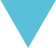
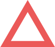

Про проєкт
Віртуальний музей української діаспори
Освітня та науково-просвітницька веб-платформа, створена з метою оприлюднення оцифрованої колекції Музею української діаспори та його партнерів, поширення знань про історію та культурні надбання світового українства, діяльність українських інституцій світу та видатних особистостей українського походження, публікації наукових та науково-просвітницьких матеріалів на теми діаспори, інформування про події та новини в глобальному українському світі.
Місія віртуального музею української діаспори
Зберігати історію та культуру світових українців, зміцнювати національну самосвідомість, об’єднувати українців світу, посилювати позитивний міжнародний імідж України.

Музей української діаспори. Київ, Україна

Осередок. Вінніпег, Канада

Українська вільна академія наук. Нью Йорк, США

Засновники та партнери віртуального музею української діаспори
Засновники — Музей української діаспори (м. Київ, Україна) та Міжнародний благодійний фонд світових українців “Діаспора”. Партнери — Центр української культури та освіти “Осередок” (Вінніпег, Канада), Національний український музей Чикаго (США), Українська вільна академія наук (Нью-Йорк, США). До кола партнерів залучатимуться й інші інституції та приватні особи.
Колекція віртуального музею української діаспори
базується на фондах Музею української діаспори, а також вміщує вибрані предмети зі збірок партнерських інституцій та приватних осіб. До колекції залучатимуться експонати, які знайомлять з історією та культурними надбаннями українців світу, а також ті, що відображають історію та культуру України та зберігаються в діаспорних інституціях.
Колекція згрупована за видами експонатів. Також виділені окремі тематичні чи меморіальні розділи, зокрема, присвячені останньому Президенту УНР в екзилі Миколі Плав’юку, диригенту та композитору Олександрові Кошицю, мистецькій династії Кричевських, українцям в Канаді та українцям в Австралії.

Людмила Морозова. Кетскільський краєвид у березні. Полотно, олія. 1972. Український музей у Чикаго

Степан Хвиля. Виставка. Картон, олія. 1980. Музей української діаспори

Катерина Кричевська-Росандіч. Ґранд Канал. Венеція. Папір, акварель. 1966. Український музей у Нью-Йорку
Розділ “Імена”
Формується на основі доступних фондів та розповідає про представників трьох хвиль еміграції з України, які залишили помітний слід у різних царинах життєдіяльності, а також повертає в контекст української історії та культури майже забутих вихідців із України.

Катерина Кричевська і Михайло Воскобійник. Гайдельберг. Німеччина.
Олімпія Добровольська та Йосип Гірняк. 1969. Український музей у Нью-Йорку
Олександр Кошиць на площі Святого Марка у Венеції. Архів УВАН

Віртуальний музей української діаспори також оприлюднює інформацію про колекції світової україніки, які зберігаються в різних музеях та архівах, публікує галузеві наукові дослідження, анонсує тематичні події тощо.
Команда проєкту

Оксана Підсуха
Шеф-редакторка і кураторка Віртуального музею української діаспори
Мистецтвознавиця, директорка Музею української діаспори
Ганна Лексіна
Головна редакторка Віртуального музею української діаспори
Мистецтвознавиця, провідна наукова співробітниця Музею української діаспори
Юлія Ковальська
Виконавча директорка Віртуального музею української діаспори
Голова правління Міжнародного благодійного фонду світових українців «Діаспора»

Ольга Сухобокова
Наукова керівниця Віртуального музею української діаспори
Історикиня, кандидатка історичних наук, доцентка Кафедри нової та новітньої історії зарубіжних країн Київського національного університету імені Тараса Шевченка

Олена Подобєд
Наукова редакторка Віртуального музею української діаспори
Історикиня, докторка історичних наук, доцентка Кафедри джерелознавства та спеціальних історичних дисциплін Національного педагогічного університету імені Михайла Драгоманова
Олександра Драч
Наукова редакторка Віртуального музею української діаспори
Культурологиня, старша наукова співробітниця Музею української діаспори
Запрошуємо до співпраці музеї та архіви світу, дослідників історії та культури української діаспори, приватних колекціонерів та представників медіа спільноти!
Створюємо музей спільно!